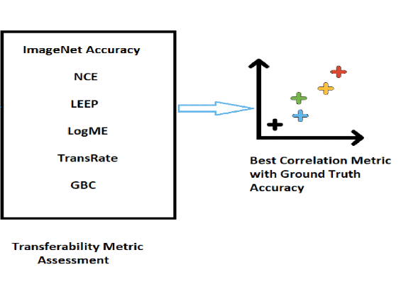
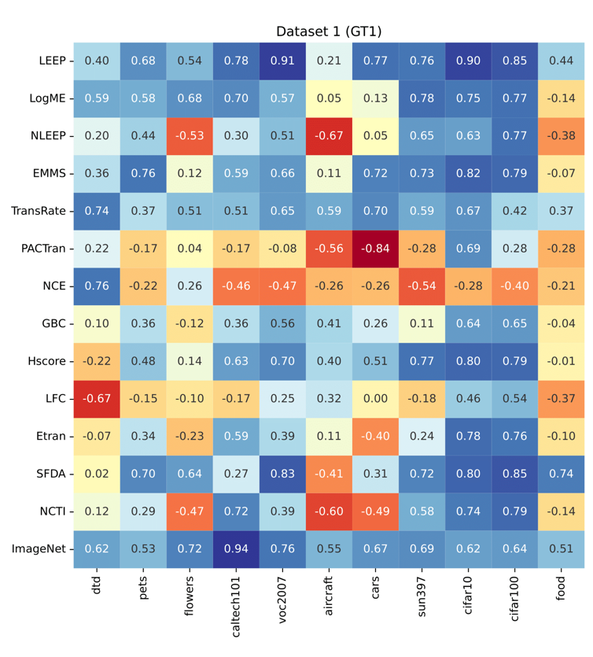

Selected Publications

Rethinking Model Selection Beyond ImageNet Accuracy for Waste Classification
The 14th International Conference on Pattern Recognition Applications and Methods (ICPRAM)
2025


Parameter-Efficient Fine-Tuning of Large Pretrained Models for Instance Segmentation Tasks
Machine Learning and Knowledge Extraction
2024

Double Transfer Learning to detect Lithium-Ion batteries on X-Ray images
17th International Work-Conference on Artificial Neural Networks (IWANN 2023)
2023
A Transfer Learning Evaluation of Deep Neural Networks for Image Classification
Machine Learning and Knowledge Extraction
2022
Battery detection of XRay images using transfer learning
European Symposium on Artificial Neural Networks (ESANN), Bruges, Belgium
2022